一个agent连续工作几小时，累积的会话会到几十万token：这就是前沿模型开始宣称百万上下文窗口的原因。但要训出这种能力，必须用百万token的序列去训练，而这样的序列放不进一块GPU，也放不进八块。
这份TRL指南用单台8卡节点的真实示例，把「怎么把288GB降到56GB」拆成四个杠杆：损失分块、YaRN位置重缩放、激活卸载、上下文并行，并给出每一步的内存曲线与实测耗时。
一个agent能在同一个任务上连续工作好几个小时：读文件、跑命令、把会话的每一轮都带下去。累积起来的会话长达几十万token，这也是前沿模型开始对外宣称百万token上下文窗口的原因。
要让模型真正擅长这么长的上下文，就得用同样长的序列去训练它，而难点恰恰在这里：百万token的序列放不进一块GPU，没有额外手段的话，也放不进八块。这份指南的示例，正是在单台8卡节点上、每一步用这样一条序列来训练。
先看需要的环境：一台8张H100（或更好）的节点，以及main分支的transformers：示例用到梯度检查点的offload功能，它还没有进入正式发布。运行命令如下：
accelerate launch \
--config_file examples/sft_qwen3_8b_1m_context/context_parallel_8gpu.yaml \
examples/sft_qwen3_8b_1m_context/sft_qwen3_8b_1m_context.py脚本在PG-19的书本数据上微调Qwen3-8B，把书首尾相接拼起来，直到每条序列大约一百万token。经过十分钟左右的加载与分词，第一步落地：
{'loss': 4.311, 'grad_norm': 29.25, 'num_tokens': 1049000.0, 'epoch': 0.25}
8%|▊ | 1/12 [06:20<1:09:41, 380.10s/it]这里有三个数字值得一读。num_tokens是1.049e6，这是一条序列，而不是一批短序列：每个token都要注意到此前的每一个token，跨越整个百万长度。loss从4.3开始，这是正常的初始损失；如果长上下文配置有细微错误，起点会在10左右，后面会解释原因。每步380秒，一步就是一条序列，也就是每条序列略超六分钟。
按朴素做法，这条序列每张GPU需要288GB。接下来的全部内容，讲的就是这个数字如何降到56GB。
下面所有内容都从一个我们已经熟悉的设定往上搭：一块GPU、每条序列几千个token。随着序列变长，事情会开始出问题，而且出问题的顺序是固定的。
把Qwen3-4B放在一张80GB的卡上，然后不断拉长序列。最先耗尽显存的不是模型，而是损失。看内存profile：
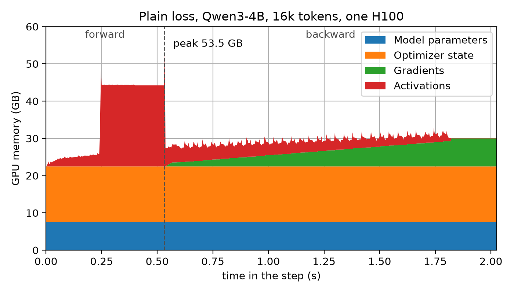
峰值的出现位置在前向与反向之间，正是计算损失的地方。要理解峰值为什么在那里，需要看解码的最后几个阶段做了什么、损失又是如何从中构建出来的。
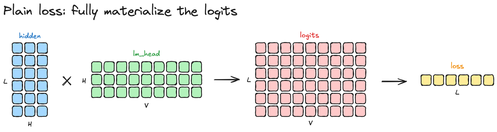
解码器最后一层输出一个形状为「序列长度 × 隐藏维」的隐状态；它随后与语言模型头的权重相乘，得到形状为「序列长度 × 词表大小」的logits矩阵。这个矩阵非常巨大，因为序列很长、词表又很大（十万以上条目）。损失再由这个矩阵与目标标签通过交叉熵算出，而把它实体化出来，正是峰值的来源。
那么，能不能不把整个logits矩阵实体化就计算损失？可以，分块进行。
不再一次算出整条序列的logits，而是一次取几百行、算出这些行的损失再求和，整个logits矩阵从不完整驻留内存。行是能够干净切分的维度：损失是对行求和，而其中的softmax只沿单行的词表方向运行，所以一块行自带它自己损失所需要的一切。
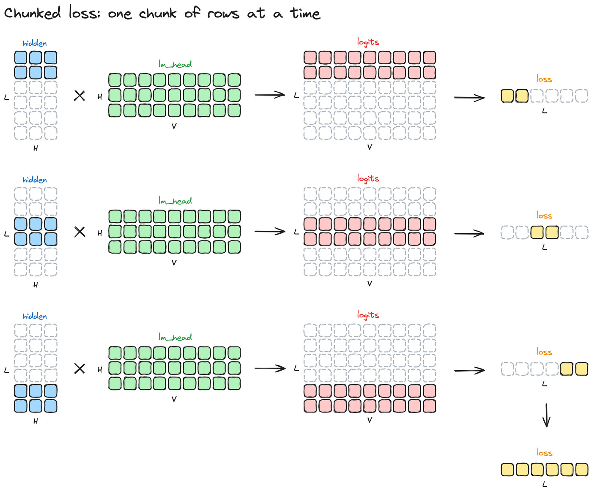
一次大乘法变成几次小乘法，节省的内存足够让损失不再成为峰值。TRL每块使用256行，这样每次乘法仍然足够大，能用好GPU。新的profile长这样：
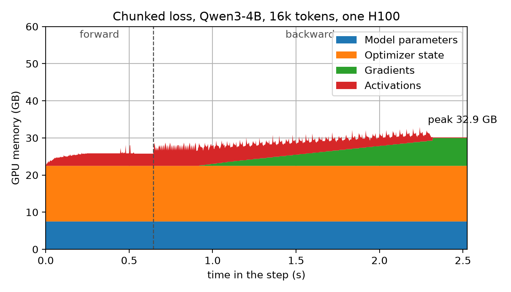
峰值消失了。在TRL里怎么开启？什么都不用做：分块损失就是默认行为。如果你想换回普通损失，把SFTConfig里的loss_type设为nll。
仅这一处改动，从内存角度看就把可训练的序列从32k token推到了160k。
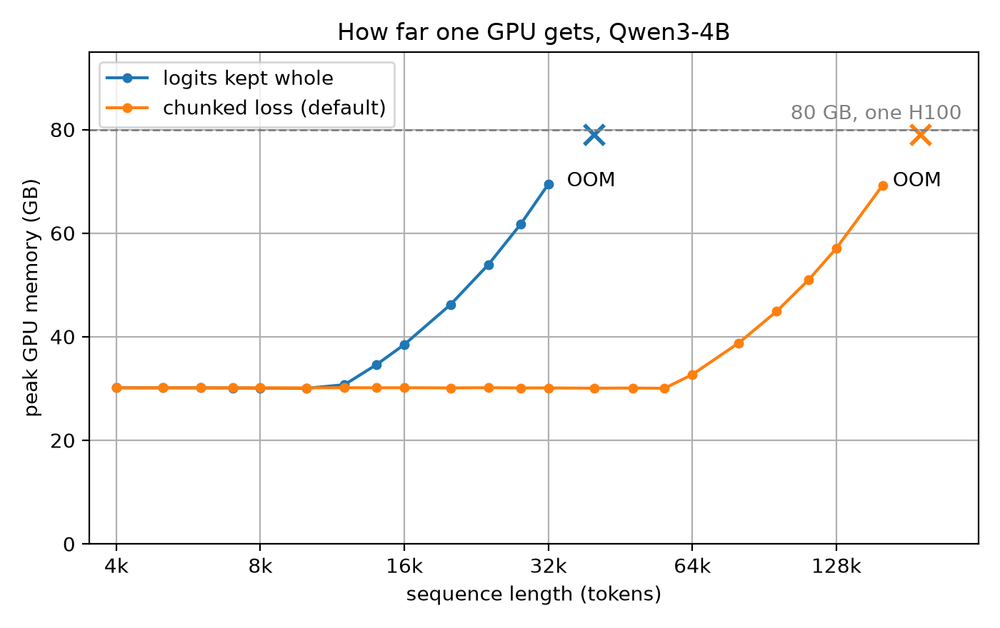
现在内存能装下160k token了。但模型真的能读懂它们吗？Qwen3-4B是在40,960 token的序列上训练的，配置里写得很清楚：
>>> from transformers import AutoConfig
>>> AutoConfig.from_pretrained("Qwen/Qwen3-4B").max_position_embeddings
40960超过这个长度的每一个位置，都是模型从未遇到过的位置。什么都不会崩，但训练只是在一些模型无法定位的token上进行。下面是一条160k token序列上每个token的损失：
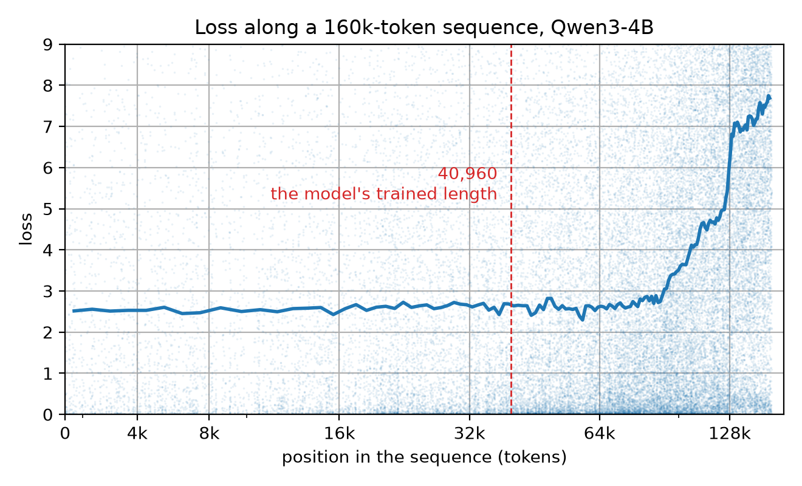
模型并不会在40,960处突然垮掉，它还会继续一阵，直到大约70k之后才开始失去线索；从那以后损失稳步攀升，最终高于同一段文本的一元熵（6.45），也就是说，比一个完全忽略上下文、只按token频率预测的模型还差。
每个token都带着它的位置，而模型学到的是0到40,960之间位置的含义。问它第10万个位置，它没有任何依据可循。出路是：永远不要交给它一个它不认识的位置。做法是重缩放：第100,000个位置变成第25,000个，序列中的每个位置都落回模型熟悉的范围内。token本身不变，变的只是给每个token的位置。这正是YaRN做的事，而缩放因子就是我们往外推了多远：训练时40,960、现在要163,840，所以因子是4。
在TRL里怎么开启？在加载模型时传入RoPE配置：
training_args = SFTConfig(
...,
model_init_kwargs={
"rope_parameters": {
"rope_type": "yarn",
"rope_theta": 1_000_000, # has to match what the model ships with
"factor": 4.0,
"original_max_position_embeddings": 40960,
},
},
)同样的测量，把重缩放之后的那次运行叠在上面：
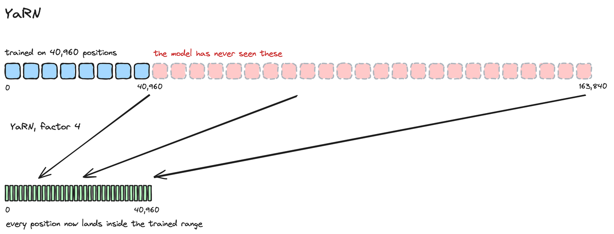
重缩放后的运行一直平稳到160k。在最后2万个token上，它的平均损失是2.8，而没有重缩放时是7.3。
损失已经分块、位置已经重缩放，一块GPU能把我们带到160k token。然后显存又不够了。这次是什么占满了卡？
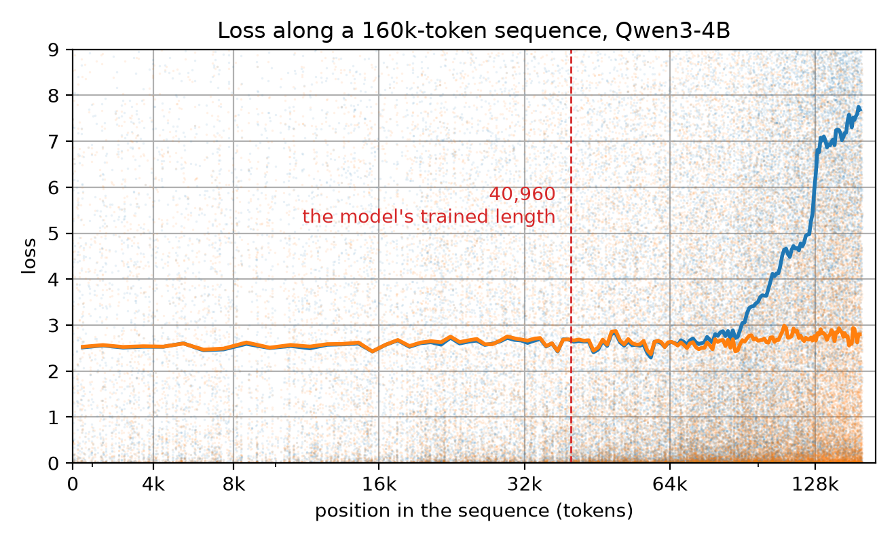
模型和它的优化器占掉固定的22GB，与序列长度无关。在此之上，每一个红色条带是一层保存下来的激活，每层0.47GB。它们在前向写入时层层堆起、待在那里，再在反向传播消费时逐层释放。顶部的灰色，是几毫秒之内就被重算又丢弃掉的东西。
TRL已经在替你减少这部分开销，而且默认开启。梯度检查点只保留进入每一层的输入，把层内部算出的一切都丢掉：注意力分数、宽MLP中间值、各种归一化；等反向传播需要时，再跑一遍该层把它们取回来。活下来的是每层一个保存张量，形状是序列长度乘隐藏维，而在长序列下，这仍然是卡上最大的东西。
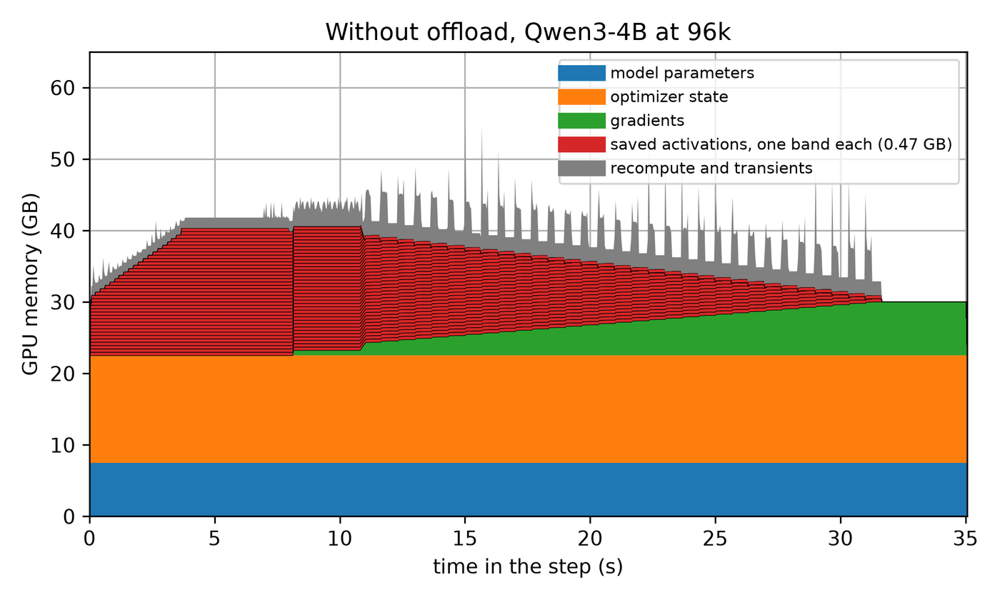
这里有一个很有用的观察：这些张量在前向阶段根本用不到。它们被写入、被搁置，很久之后才被读取。所以它们不必在这段时间里一直待在GPU上：可以搬到CPU内存，等反向传播走到时再取回来。
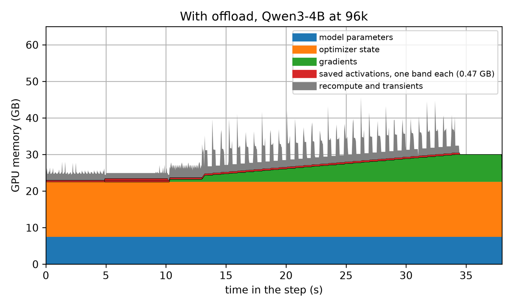
training_args = SFTConfig(..., gradient_checkpointing_kwargs={"offload": True})同一步、同样的长度：不再是38个条带层层堆叠，而是最多只有4个常驻，峰值从59.9GB降到48.8GB。这换来的是序列长度：
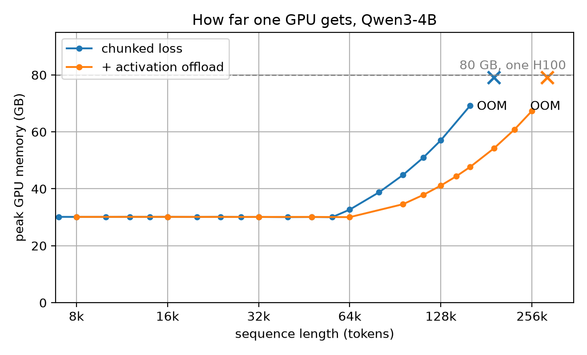
在48k以下，开启与不开启的曲线是一样的，因为那个长度上没多少东西可搬。超过48k之后，卸载版本一直更低，原本停在160k的序列，现在在同一张卡上能到256k。
这当然不是免费的：每一个保存的激活都要跨到主机再回来，这些流量必须塞进它旁边的计算之间。
分块损失、卸载激活，一张卡现在能训练256k token。那怎么到一百万？要看什么挡在路上，得看反向传播时单层内部的样子（也就是上面profile里的灰色尖峰）。
梯度检查点意味着前向几乎什么都不留：每层只存输入，其余全部丢弃。等反向传播走到时该层被重新计算，而那一刻所有东西同时存在。在MLP里，也就是模型的这一行：
down_proj(act_fn(gate_proj(x)) * up_proj(x))在完整的中间宽度上会建起四个张量，标准实现会把四个都留到反向传播走过它们为止。在百万token、且模型的MLP把每个token从2560加宽到9728的情况下：
gate_proj(x) 19 GB = 1,048,576 x 9728 x 2 bytes
act_fn(gate_proj(x)) 19 GB
up_proj(x) 19 GB
act_fn(gate_proj(x)) * up_proj(x) 19 GB
total 76 GB76GB，就在一层之内。而卡只有80GB，其中30GB已经给了模型与优化器。此时答案已经不是在存储序列上更聪明一点，而是让每块GPU少拿一点。
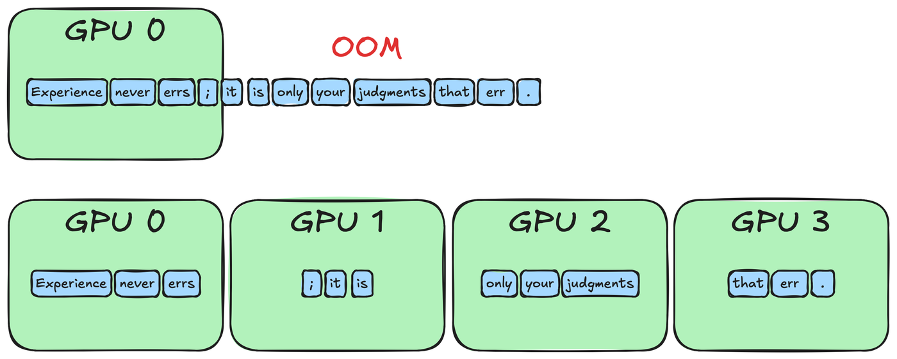
给每块GPU切一段序列。用四块GPU时，每块持有262,144个token，而不是1,048,576个。那四个张量随之缩小到19GB而不是76GB，加上模型的30GB就能放进卡里。
这里有一个显而易见的反对意见：注意力。每个token都要注意到此前每一个token，而没有任何一块GPU拥有那些更早的token。于是GPU之间交换各自缺失的部分，最终得到的结果，与一块足够巨大的GPU所算出来的完全一致。
运行这种交换有两种方式：上下文并行（CP）与Ulysses序列并行（SP）。两者的差异如下。
在FSDP2上用CP：每块GPU保留自己那一段，其他段轮流送过来，于是每个token最终都能看到更早的每一个token。
parallelism_config:
parallelism_config_cp_size: 4在DeepSpeed上用SP：它不搬切片，而是在注意力之前把批次重新洗牌，让每块GPU持有全部token、但只持有四分之一的注意力头，之后再洗回去。
parallelism_config:
parallelism_config_sp_size: 4这两个旋钮目前不会交叉：cp_size要求FSDP2，而sp_size只在DeepSpeed下运行。选定后端，方法就跟着定了。本节剩下的部分走FSDP2这条路，也正是本指南顶部示例所用的路径：它的GPU并不是各自处理独立批次的独立工人，而是共享同一条序列的一个组。
开启之后有两件事会变化。第一，序列必须填充到cp_size乘2的倍数，所以四块GPU时要在SFTConfig里设置pad_to_multiple_of=8。第二，因果SDPA的要求排除了packing：packing依赖块对角掩码来避免文档互相读取，而TRL在你同时要求两者时会直接报错；它也排除了使用滑窗或分块注意力的模型，accelerate会拒绝这些模型：OpenAI GPT-OSS、Gemma 3与4、Qwen3.5及之后的版本。Qwen3与Qwen3-MoE全程都是全注意力，这正是它们成为本文示例模型的原因。
传递切片的成本比想象的低。在单节点、131k token时，一步在两张卡上要34.6秒、四张卡17.8秒、八张卡9.5秒。组大小每翻一倍，步时间几乎减半，从两张到八张拿到了理论4倍中的3.7倍。
这就是四个杠杆里的最后一个：
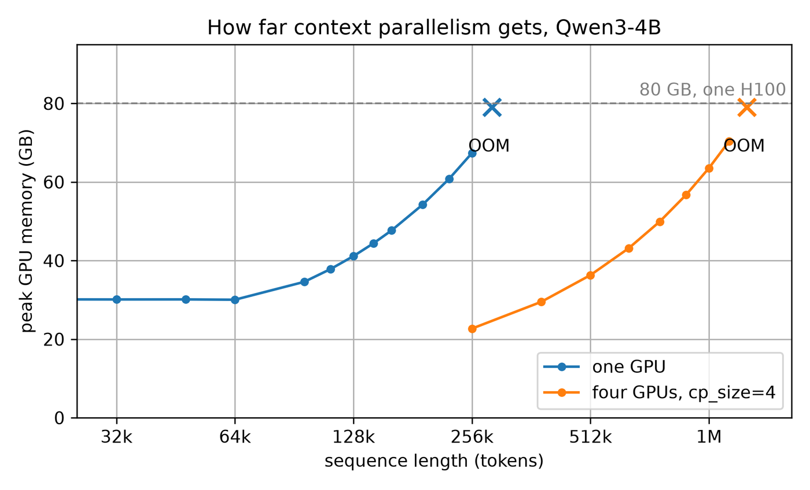
一块卡刚过256k，四块卡直接把一百万跑满，落在63.6GB，还有富余。本指南开头那条序列，装下了。
最后别忘了设置PYTORCH_CUDA_ALLOC_CONF=expandable_segments:True。在百万token下，上面这次运行在80GB卡上需要63.6GB，但不设置它仍然会失败：它申请的张量又大又连续，分配器在它已经持有的那些块之间找不到空间。
| CP | SP | |
|---|---|---|
| FSDP2 | 支持 | 不支持 |
| DeepSpeed | 不支持 | 支持 |
| 设置项 | cp_size | sp_size |
| 切分对象 | token | 注意力头 |
| 可扩展范围 | 任意数量的GPU | 最多到KV头数（这里是8） |
| 注意力实现 | 仅SDPA、因果 | SDPA或FlashAttention |
| 依赖 | accelerate 1.11 | accelerate 1.12、DeepSpeed 0.18.1 |
上下文并行：accelerate关于cp_size以及它构建的device mesh的指南。Ulysses与ring attention：两种交换方式有何不同、各自要付出多少通信代价。YaRN：RoPE一节里用到的位置重缩放。
参考：https://huggingface.co/docs/trl/long_context_training